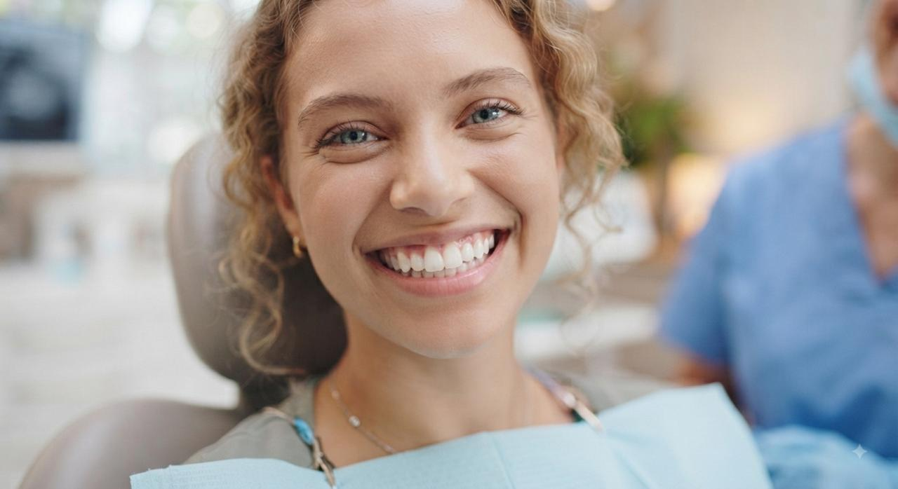
Avaliação e diagnóstico
Um olhar cuidadoso para compreender sua saúde bucal, necessidades e objetivos, definindo as melhores possibilidades de tratamento.
Cirurgiã-dentista · CRO/SC 26.766
Odontologia moderna, atendimento humanizado e tratamentos personalizados para cuidar da sua saúde bucal com excelência.
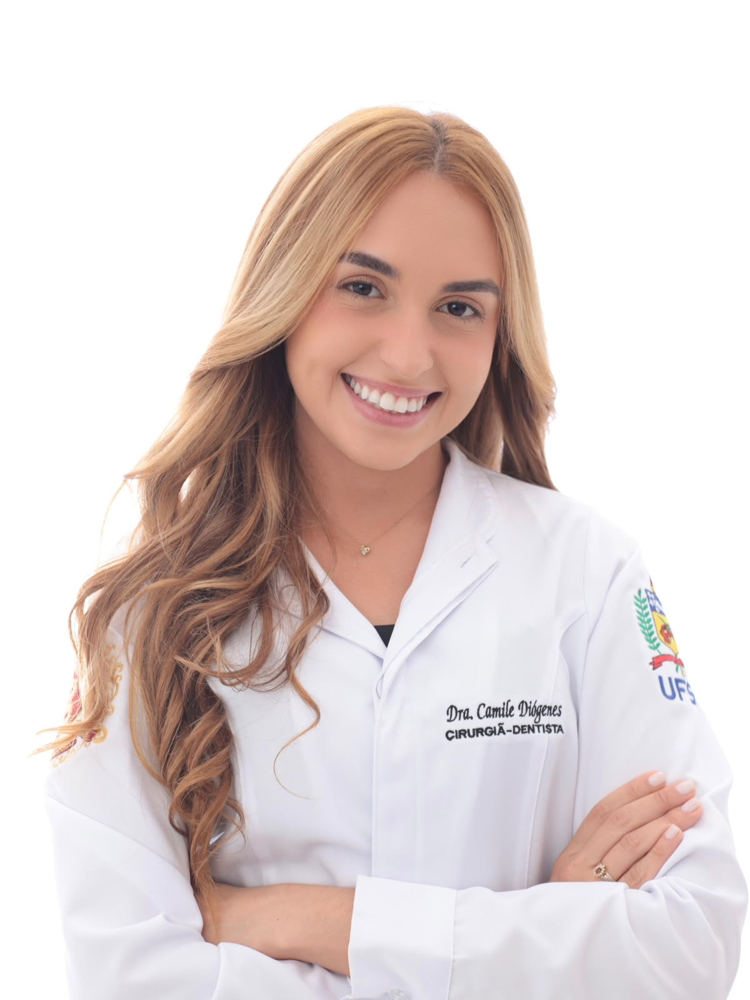
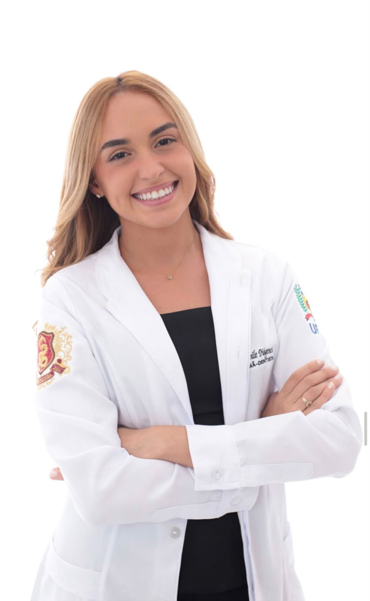
Sobre a dentista
Graduada em Odontologia pela Universidade Federal de Santa Catarina (UFSC), a Dra. Camile Diógenes atua como clínica geral, com uma abordagem baseada em evidências científicas, aliando conhecimento, planejamento e um olhar individualizado para cada paciente.
Sua experiência abrange diferentes áreas da odontologia, com foco em cirurgia oral menor, urgência odontológica, dentística restauradora e prótese fixa. Em cada atendimento, busca oferecer uma experiência acolhedora, segura e personalizada, respeitando as necessidades e expectativas de cada paciente.
“Seu sorriso é identidade, e merece um cuidado personalizado.”
Tratamentos

Um olhar cuidadoso para compreender sua saúde bucal, necessidades e objetivos, definindo as melhores possibilidades de tratamento.
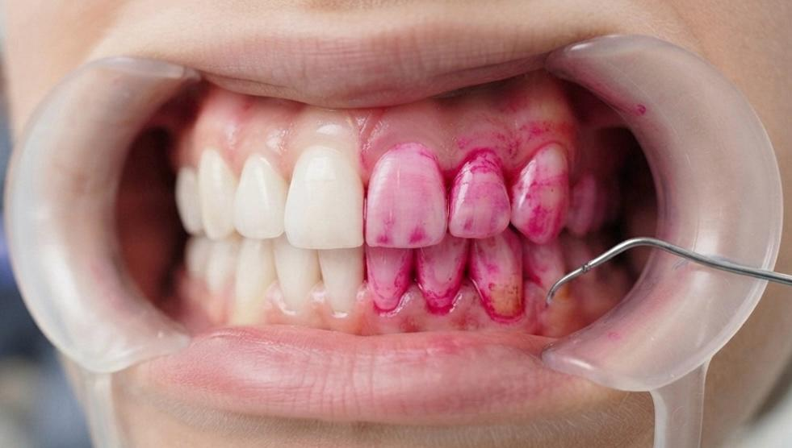
Cuidados preventivos para preservar a saúde dos dentes e tecidos periodontais, mantendo o seu sorriso saudável.
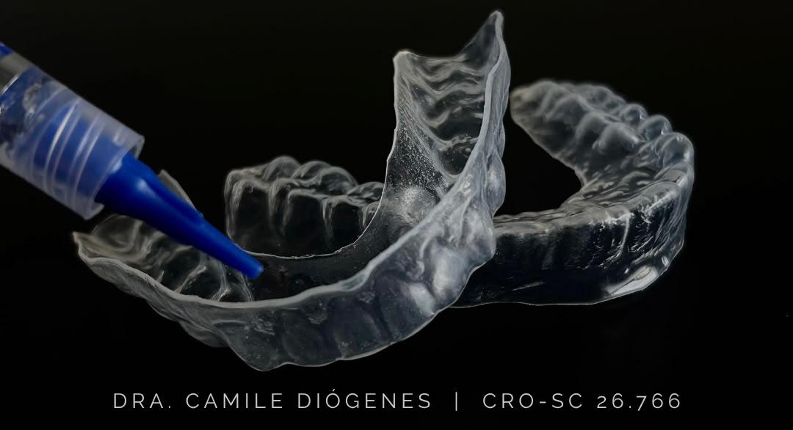
Tratamento de consultório, caseiro supervisionado ou combinado, planejado de acordo com as necessidades e características de cada paciente.
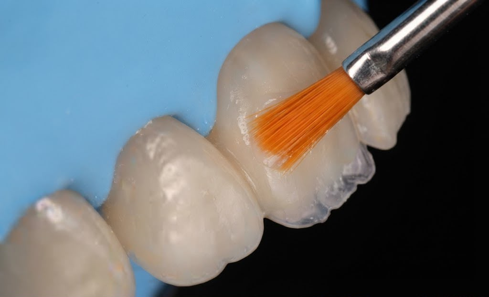
Recuperação da função e estética dos dentes, respeitando suas características naturais.
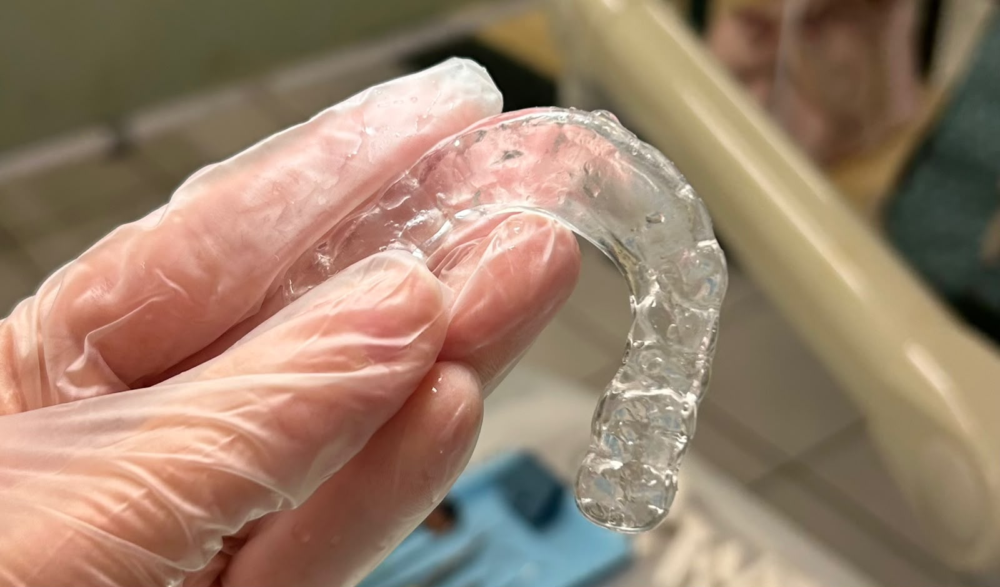
Confeccionada de modo personalizado para auxiliar na proteção dos dentes e no conforto da musculatura e articulação.
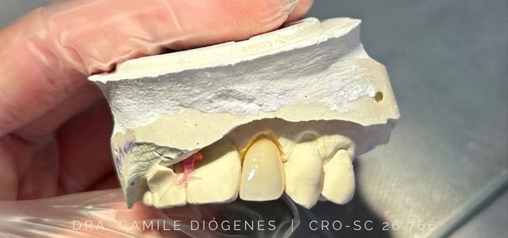
Reabilitação de função e estética, por meio de Onlay, Inlay, Overlay e Coroa.
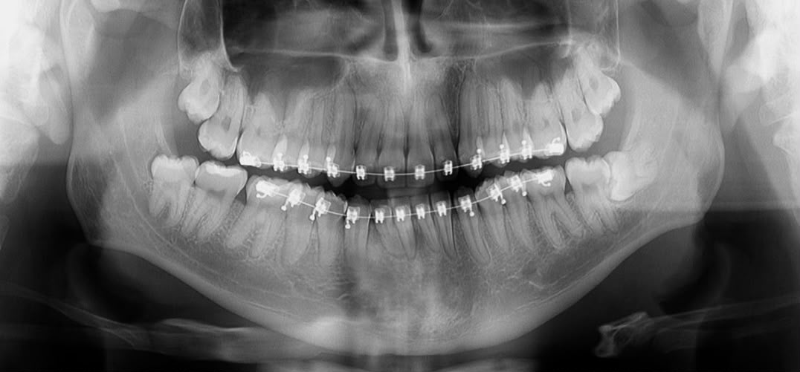
Procedimentos cirúrgicos realizados com planejamento e acompanhamento individualizado. Prezo por um cuidado completo, desde o pré-operatório até o acompanhamento pós-operatório, proporcionando segurança e tranquilidade em todas as etapas.
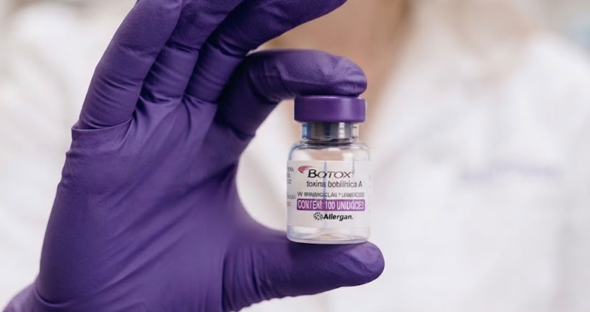
Aplicação personalizada para suavizar linhas de expressão e retardar o envelhecimento, buscando valorizar a autoestima e proporcionar resultados naturais, respeitando suas características e expectativas.
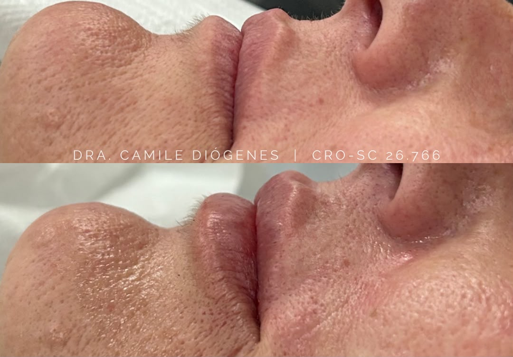
Procedimento realizado de forma individualizada para promover a harmonia facial, respeitando características naturais de cada paciente.
Telefone(48) 9 8829-4565
E-maildracamilediogenes@gmail.com
Instagram@dra.camilediogenes
EndereçoFlorianópolis — Santa Catarina, Brasil
HorárioSegunda a sexta · 08h às 19h